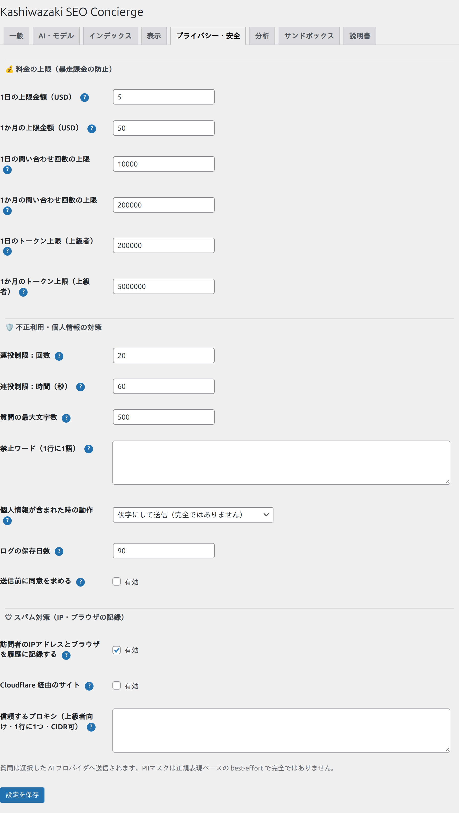

プライバシー・安全
「プライバシー・安全」タブには、想定外の高額請求や不正利用を防ぐための「安全装置」と、訪問者のプライバシーに関わる設定があります。公開前に必ず確認しましょう。

料金の上限（使いすぎ防止）
AIは従量課金なので、アクセスが急増すると費用も増えます。上限を決めておけば、それ以上はAIを呼ばず「該当なし」案内に切り替わるため、安心して公開できます。
| 項目 | 説明 |
|---|---|
| 1日あたりのコスト上限（USD） | 1日に使う金額の上限。超えるとその日はAIを呼ばなくなります。 |
| 1か月あたりのコスト上限（USD） | 月単位の上限。月の予算に合わせて設定します。 |
| トークン上限 | カスタムプロバイダで単価が未設定のときの、課金の歯止めとして働く上限。 |
不正利用・負荷対策
| 項目 | 説明 |
|---|---|
| 1日／1か月のリクエスト回数上限 | 質問できる回数の上限。いたずらや自動化による大量アクセスを抑えます。 |
| レート制限（秒あたりの回数） | 同じ訪問者が短時間に連続で質問するのを制限します（例: 60秒に20回まで）。 |
はじめは控えめな上限（例: 1日 $5、1か月 $50）から始め、運用しながら「分析」で実際の利用状況を見て調整するのがおすすめです。
プライバシー設定
| 項目 | 説明 |
|---|---|
| 同意の要求 | オンにすると、質問がAIに送信されることへの同意を訪問者に求めてから送信します。 |
| ログの保存日数 | 質問・回答の履歴を何日保存するか。過ぎたものは自動で削除されます。 |
スパム対策：IP・ブラウザの記録
いたずらやスパムの特定用に、質問の履歴へ訪問者のIPアドレスとブラウザ（ユーザーエージェント）を記録できます（既定でオン）。記録した内容は「ログの保存日数」を過ぎると自動的に削除され、「分析」タブの履歴に表示されます。IPアドレスは個人情報にあたるため、プライバシーポリシーへの記載をご検討ください。記録が不要なら、この設定をオフにしてください。
| 項目 | 説明 |
|---|---|
| IP・ブラウザを記録する | オンにすると、質問ログに訪問者のIPアドレスとブラウザを保存します（既定オン）。 |
| Cloudflare 経由のサイト | サイトをCloudflareに通している場合にオン。Cloudflare 経由のときだけ本当の訪問者IPを採用するため、IPの記録も連投制限も訪問者単位で正しく機能します。使っていなければオフのままにします。 |
| 信頼するプロキシ（上級者向け） | Cloudflare 以外のリバースプロキシ／ロードバランサ経由の場合に、その送信元IP/CIDR（例：10.0.0.0/8）を記入します。分からなければ空欄で構いません。 |
このプラグインが保存・保護するデータ
| データ | どこに／どう扱うか |
|---|---|
| APIキー | 暗号化して保存。フロント（訪問者側）には絶対に出力しません。他社のAIへ別社のキーが送られることもありません。 |
| ページの索引・埋め込み | サイト内に保存（検索用の数値データ）。サイトの公開コンテンツから作られます。 |
| 質問・回答の履歴 | 分析用にサイト内へ保存。保存日数を過ぎると自動削除。個人情報はベストエフォートでマスク処理されます。 |
| 訪問者の個人情報 | ログは匿名（セッションのハッシュ）で扱い、メールアドレス等とは結びつけません。ただしスパム対策を有効にしている場合は、IPアドレスとブラウザを記録します（保存日数の経過で自動削除）。不要な場合はオフにできます。 |
質問は回答生成のためAIサービス（例: OpenAI）に送信されます。プライバシーポリシーに「サイト内検索のためAIに質問を送信する場合がある」旨を記載しておくと親切です。WordPress標準の「プライバシー」機能（データのエクスポート／消去）にも対応しています。
コスト上限・回数上限に達すると、チャットは新しいAI回答を作らず「該当なし」案内に切り替わります。これは故障ではなく安全装置です。継続して使うには、上限の引き上げか、翌日／翌月のリセットを待ってください。